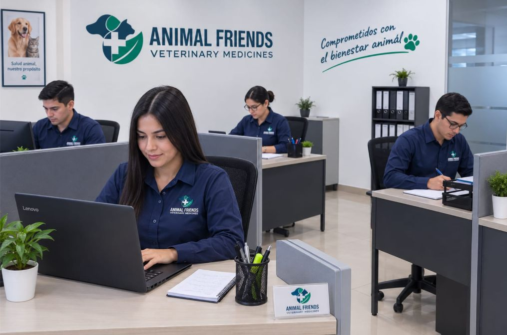
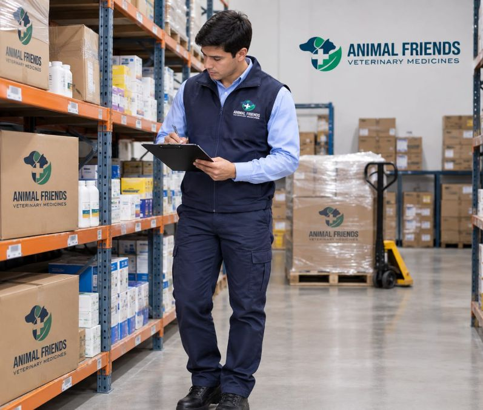
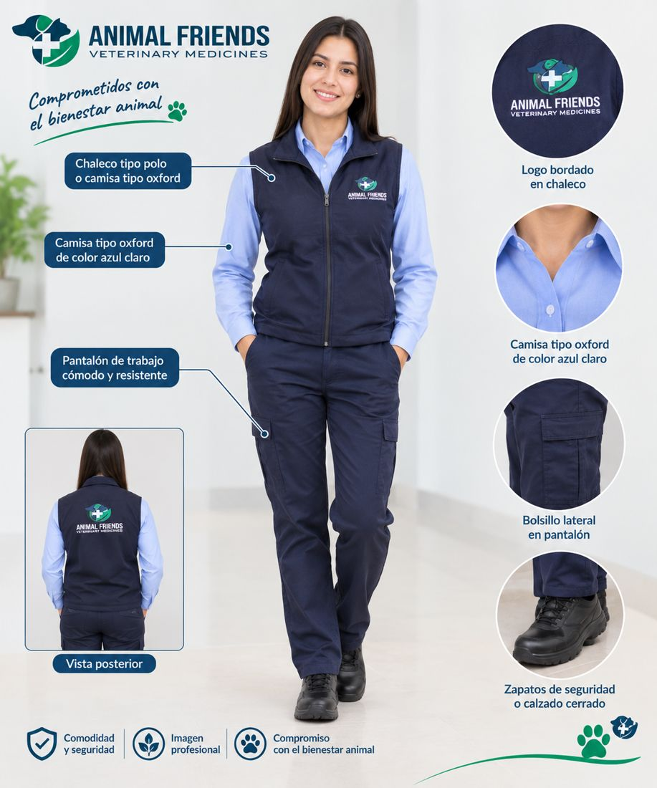
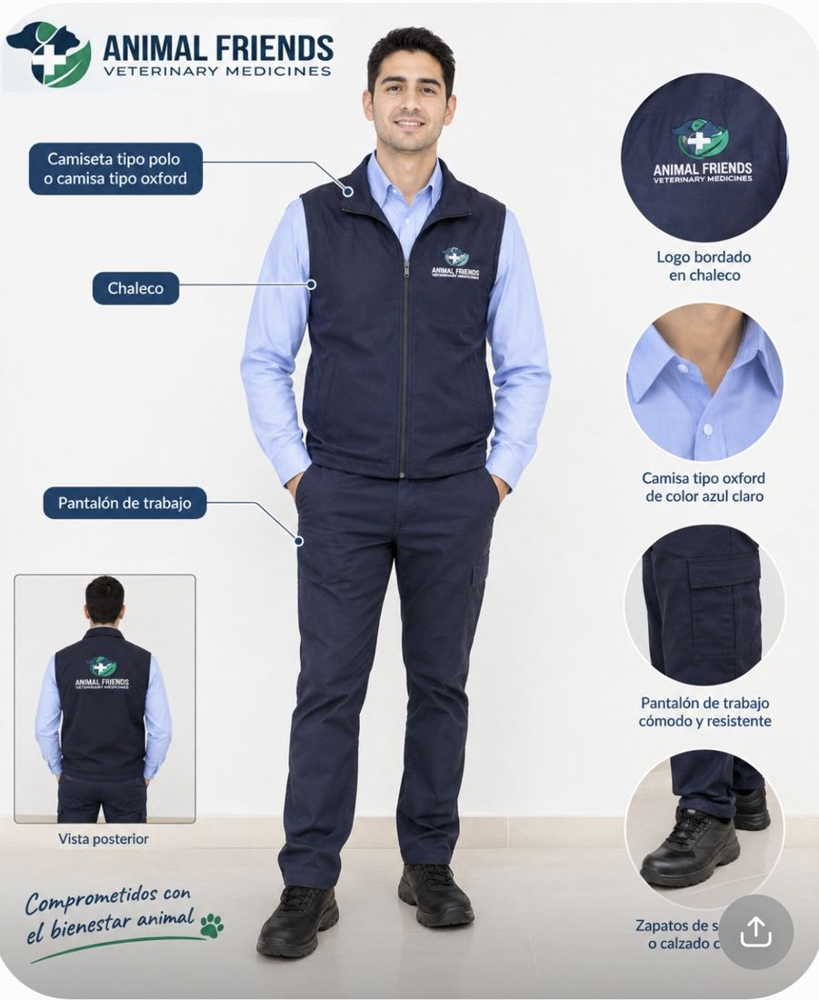
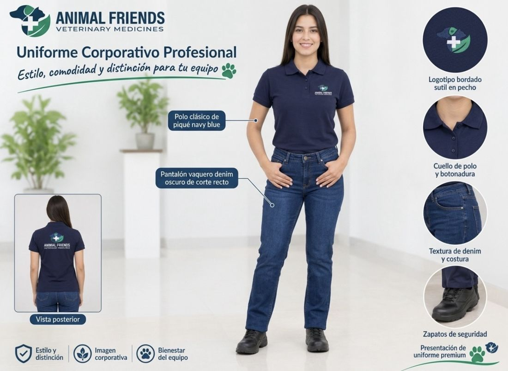

Día 1 · 08:00 a 12:00
Bienvenida, cultura y Reglamento Interno
Gestión Humana
Firma documental, carnetización e historia corporativa.

Nosotros
Bodega, ventas y administración trabajan en una sola sede, con calidad y seguridad en cada proceso y un equipo identificado.
Inducción general
En Animal Friends Company S.A.S. nos apasiona el bienestar animal y el desarrollo sostenible del sector agropecuario en Colombia. Hoy inicias un camino de crecimiento profesional, técnico y humano en nuestra sede principal de Medellín.
Día 1 · 08:00 a 12:00
Gestión Humana
Firma documental, carnetización e historia corporativa.
Día 2 · 14:00 a 17:00
SST y Prevención
Identificación de riesgos, manejo de emergencias y EPP.
Día 3 · 08:00 a 12:00
Dirección Comercial
Líneas de medicamentos, insumos agro y clientes clave.
Día 4 · 14:00 a 17:00
Técnico - Regulatorio
Buenas Prácticas de Almacenamiento (BPA) farmacéutico.
Fase 1 · Días 1 y 2
Inmersión institucional, cultura corporativa, marco legal agropecuario, políticas del RIT y compromisos ambientales.
Fase 2 · Semana 1
Capacitación directa en el puesto de trabajo con el acompañamiento permanente de un padrino técnico de área.
Fase 3 · Meses 1 y 2
Evaluaciones periódicas de desempeño, retroalimentación constante y cierre del período de prueba.
Lunes a viernes de 7:30 a. m. a 5:00 p. m., con un espacio de almuerzo de 1 hora en el área de entretenimiento.
Cumplir el reglamento interno de trabajo, acatar rigurosamente los protocolos de bioseguridad del ICA, mantener absoluta confidencialidad de la información y utilizar responsablemente los recursos.
Cómo trabajamos
Tres áreas coordinadas para que cada pedido se almacene, se venda y se gestione con orden.

Recepción, almacenamiento y despacho con Buenas Prácticas de Almacenamiento y elementos de protección personal.
Atención a clientes y aliados, gestión comercial, contable y de talento humano.
Calidad y seguridad
Nuestra política de Seguridad y Salud en el Trabajo se revisa al menos una vez al año para mantenerla vigente.
Nuestro equipo
Un equipo de 10 colaboradores con uniforme institucional, carné empresarial y formación técnica en bioseguridad.



Inducción específica
Temario de la inducción específica, soportes documentales y evaluación final del cargo.
Bienestar laboral
Desde la Dirección de Recursos Humanos estamos comprometidos en brindarte las herramientas, la capacitación técnica y la calidez humana necesarias para potenciar tu talento en un entorno seguro.
Evaluación del desempeño
Así se acompaña el avance durante la inducción y el período de prueba.
Diez preguntas orales sobre el RIT y controles de bioseguridad en el cargo a desempeñar.
Revisión conjunta con tu jefe inmediato sobre el avance en las metas iniciales.
Retroalimentación 360° para ratificación o plan de mejora técnica.